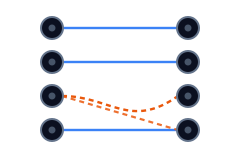
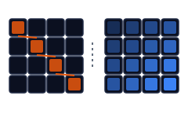
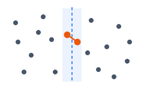

Implémenter et mesurer des algorithmes classiques
Appariement stable, glouton contre programmation dynamique, et la paire de points la plus proche. Chacun implémenté, puis comparé par banc d’essai à ses concurrents au lieu de se fier à la classe de complexité sur papier.
De quoi il s’agit
Travail réalisé dans le cadre d’IFT 2125, Introduction à l’algorithmique à l’Université de Montréal. Un devoir, trois problèmes classiques, chacun avec une partie théorique et une partie implémentation. C’est la seconde qui est intéressante : chaque algorithme devait tourner dans un banc d’essai et être chronométré sur les mêmes entrées que ses rivaux.
Cela transforme une borne asymptotique en quelque chose sur quoi on peut se tromper. Deux fois ici, la mesure a contredit l’intuition, et c’est toute la raison de prendre les chiffres.
Comment la justesse a été vérifiée
Chronométrer une mauvaise réponse ne vaut rien : le banc d’essai embarque donc des solutions optimales connues et vérifie chaque résultat à une tolérance près avant que la moindre comparaison de vitesse ne compte. Pour l’appariement stable il va plus loin et mesure quelle proportion des paires de couples est réellement stable, de sorte qu’un quasi-échec reste visible.
Les trois problèmes

Appariement stable
Apparier chaque personne d’un côté avec une personne de l’autre pour qu’aucune paire ne préfère mutuellement échanger.
- Gale-Shapley construit deux fois : l’un prétrie chaque liste de préférences avec un seul
argsortet avance un pointeur par proposant, l’autre garde une matrice n par n des propositions déjà faites et rebalaie la meilleure option restante à chaque tour - Les deux tiennent un tableau de partenaires et une liste de travail des proposants libres, où l’on remet quiconque se fait rejeter
- Trois références pour contraste : le meilleur partenaire encore libre dans l’ordre des indices, une variante symétrique qui trie les n au carré arêtes par la somme des scores des deux côtés, et une triviale qui apparie indice à indice
- Chaque variante se termine en appelant le score de stabilité du banc d’essai, de sorte que les cinq sont jugées de la même façon. Gale-Shapley est en O(n2) au pire, chaque proposant pouvant parcourir toute sa liste une fois

Glouton contre programmation dynamique
Le même problème d’appariement, cette fois avec une structure qui rend une solution exacte atteignable.
- La contrainte est que les arêtes ne peuvent pas se croiser : une arête vers une ligne plus basse ne doit pas retomber sur une colonne antérieure, ce qui est testé contre chaque arête déjà retenue
- Le glouton trie les n par m arêtes par poids et en prend une quand les deux extrémités sont libres et que rien de déjà retenu ne la croise, donc chaque candidate rebalaie l’appariement courant
- La programmation dynamique remplit une table (n+1) par (m+1) avec
max(haut, gauche, diagonale + X[i][j]), la même forme qu’une plus longue sous-séquence commune pondérée - Un retour arrière depuis le coin inférieur droit reconstruit les arêtes réellement retenues. La table se remplit en O(nm) ; le glouton paie un tri plus un rebalayage des croisements par arête candidate

Paire de points la plus proche
Trouver les deux points les plus rapprochés d’un plan, plus vite qu’en comparant toutes les paires.
- Trié en x et en y une seule fois au départ, puis la récursion coupe x au point médian et partitionne la liste ordonnée en y contre ce même médian, de sorte que l’ordre en y survit sans jamais retrier
- La bande retient les points situés à moins de la meilleure distance courante de la ligne de partage, et la boucle interne ne compare chacun qu’aux sept suivants. Cette constante de sept est la réponse à la question théorique autour de laquelle le code est bâti : un argument de recouvrement borne le nombre de points pouvant tenir dans la bande sans être déjà plus proches que la meilleure distance trouvée
- La seconde version trie en x une fois mais retrie le corridor en y à chaque appel récursif, et c’est toute la différence entre les deux courbes ci-dessous
- Elle travaille aussi en distances au carré, ce qui garde la racine carrée hors de la boucle interne, et cela n’a pas suffi à la sauver
Les mesures
Réexécuté pour cette page sur un Ryzen 7 7700 sous Python 3.12, moyenné sur des essais répétés à chaque taille : 64 exécutions au plus petit n, jusqu’à 2 au plus grand, d’où des barres qui s’élargissent à droite.
Stabilité du résultat
Proportion des paires de couples qui ressortent stables. Les barres valent deux écarts-types ; Gale-Shapley n’en a aucune, renvoyant un appariement parfaitement stable à chaque exécution.
Afficher les chiffres
| n=20 | n=40 | n=80 | n=160 | n=320 | n=640 | |
|---|---|---|---|---|---|---|
| Gale-Shapley | 1.000 | 1.000 | 1.000 | 1.000 | 1.000 | 1.000 |
| Glouton (meilleure paire) | 0.913 | 0.938 | 0.961 | 0.975 | 0.987 | 0.992 |
| Glouton (trivial) | 0.544 | 0.559 | 0.559 | 0.561 | 0.550 | 0.548 |
Glouton contre programmation dynamique
Mêmes instances, les deux mesures. La solution exacte gagne en vitesse et en score à chaque taille, ce qui n’est pas le compromis annoncé par les manuels.
Afficher les chiffres
| n=32 | n=64 | n=128 | n=256 | n=512 | n=1024 | |
|---|---|---|---|---|---|---|
| Glouton | 310 µs / 870 | 1.4 ms / 1,490 | 7.0 ms / 3,199 | 30.2 ms / 5,867 | 201.5 ms / 9,276 | 967.0 ms / 11,785 |
| Programmation dynamique | 290 µs / 1,660 | 1.1 ms / 3,308 | 4.2 ms / 6,885 | 16.4 ms / 13,889 | 71.0 ms / 27,796 | 299.5 ms / 55,858 |
Le coût d’un tri mal placé
Paire la plus proche, mêmes entrées. La croissance mesurée de 10⁴ à 10⁵ est d’un facteur 13,9 pour un n multiplié par dix, soit ce que prédit n log n.
Afficher les chiffres
| n=10 | n=100 | n=1,000 | n=10⁴ | n=10⁵ | |
|---|---|---|---|---|---|
| Trier une fois, puis diviser | 9 µs | 132 µs | 2.2 ms | 30.0 ms | 418.8 ms |
| Diviser, puis trier | 18 µs | 251 µs | 3.7 ms | 59.5 ms | 982.7 ms |
Ce que disent les chiffres
D’abord, ce que le chronométrage ne montre pas
Le graphique de stabilité vient avec une réserve trouvée en lisant le banc d’essai plutôt que sa sortie. Évaluer un appariement compare toutes les paires de couples : cela coûte de l’ordre de n au carré, et cela s’exécute à l’intérieur de la zone chronométrée. La variante triviale construit sa réponse en temps linéaire et coûte pourtant 107 ms à n = 640, contre 102 ms pour un Gale-Shapley complet. La quasi-totalité de ces deux chiffres, c’est l’évaluation et non l’algorithme.
La lecture honnête est donc étroite. La comparaison de stabilité tient, car cet axe n’est pas contaminé. L’écart entre les deux versions de Gale-Shapley tient, car il dépasse largement ce plancher commun. Affirmer qu’un algorithme d’appariement est plus rapide qu’un autre ne tiendrait pas, sur ce banc d’essai. Remarquer qu’une mesure se mesure en partie elle-même est ce qu’il faut en retenir.
L’implémentation a battu l’algorithme
Les deux versions de Gale-Shapley sont en O(n2) et renvoient des appariements identiques, pourtant l’une est 3,8 fois plus lente à n = 640 : 388 ms contre 102 ms. La seule différence est un argsort par liste de préférences contre un rebalayage en O(n) à chaque proposition. Même asymptotique, même sortie, et c’est la constante qui a tranché.
Le glouton a perdu sur les deux axes
Le compromis attendu veut plus rapide mais moins bon. Face à une programmation dynamique en O(nm), le glouton a été moins bon et plus lent : 967 ms contre 300 ms à n = 1024, pour 11 785 contre 55 858. Trier chaque arête puis rebalayer l’appariement à la recherche de croisements coûte plus cher que remplir la table, et prendre les arêtes lourdes d’abord bloque l’ordre que la solution exacte exploite.
Un balayage plat qui cachait un bogue
Faire varier le seuil de bascule sur la première version ne changeait rien, ce qui ressemblait à un joli résultat nul. La lecture du code l’a expliqué : cette version fixe son cas de base à trois points en dur et ne lit jamais le paramètre. Sur celle qui le lit, le même balayage couvre un facteur 2,3, de 58 ms à 133 ms, avec un optimum net à 24.
Une optimisation qui n’a rien rapporté
La version la plus lente est aussi celle qui évite une racine carrée, en comparant des distances au carré dans sa boucle interne, alors que la plus rapide appelle une vraie fonction de distance. Elle perd quand même par un facteur 2,3, parce que retrier le corridor à chaque appel récursif coûte bien plus que les racines économisées. De l’arithmétique moins chère dans un parcours moins bon n’est pas une économie.